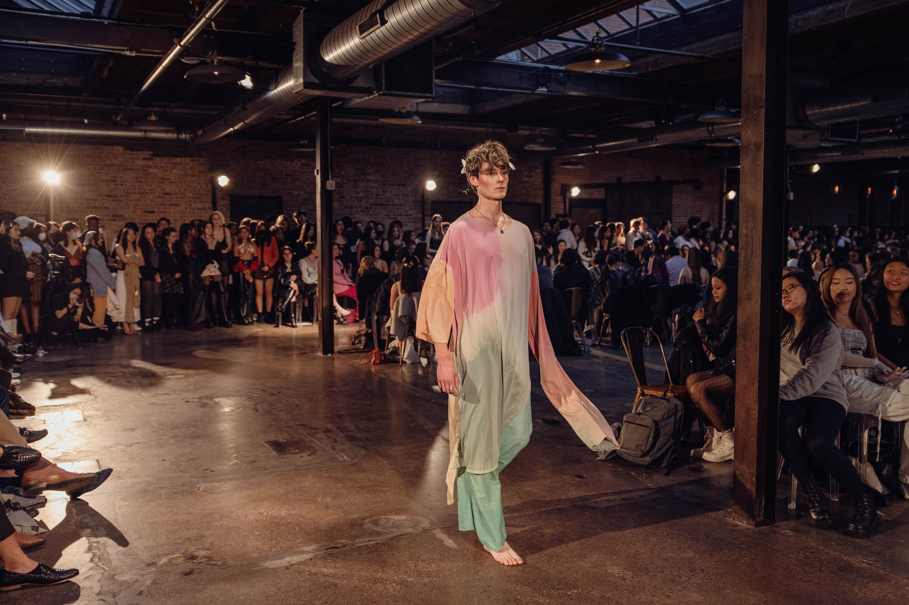
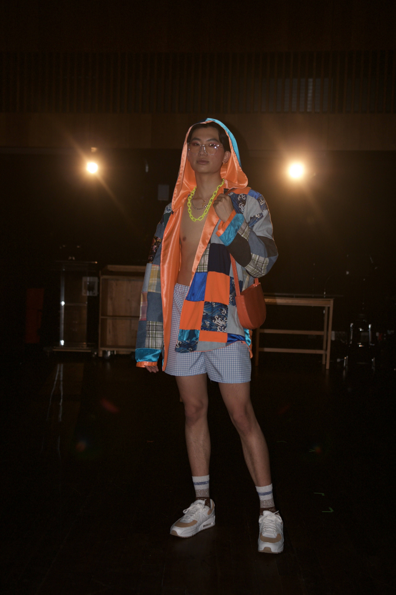
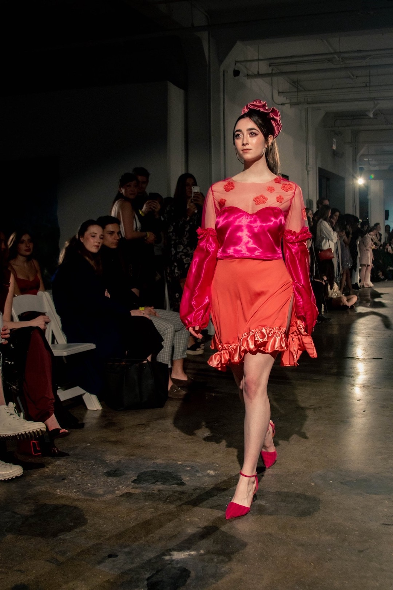
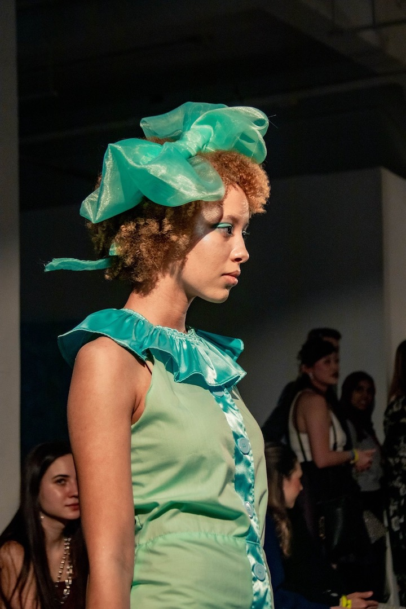

Flower Child



Thank you Julian, Hesper, and Bettye for being great inspirations.
Patchwork

Thank you Zachary for being patient.
Monochrome




Thank you Ilinca, Layla, and Valerie for being my first ever models.